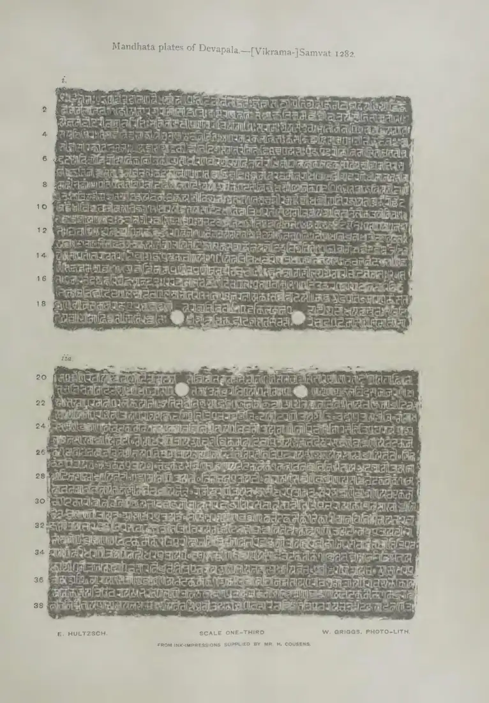
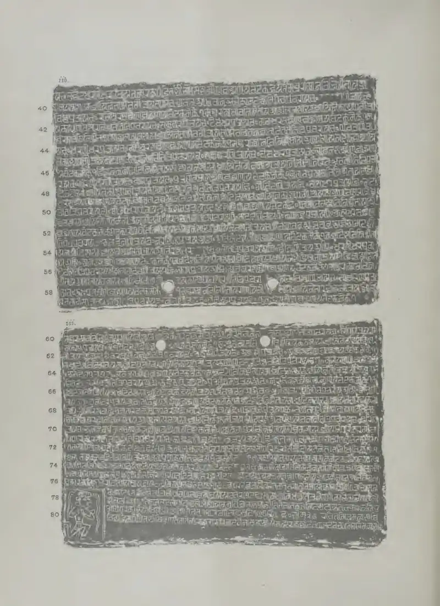

Mândhâtâ plates of Dêvapâla and Jayavarman II. of Mâlava
MANDHATA PLATES OF DEVAPALA AND JAYAVARMAN II.
OF MALAVA.
BY PROFESSOR F. KIELHORN, C.I.E.; GÖTTINGEN.
Of the Paramâra kings, who ruled over Mâlava for more than three hundred years, there have been published hitherto the texts of twelve copper-plate and three stone inscriptions. We have besides short notices of about half a dozen other stone inscriptions, generally of small extent or importance. Of the copper-plate inscriptions, three were first edited by Colebrooke in 1824, two by L. Wilkinson in 1836 and 1838, one by Rajendralal Mitra in 1850, and three by FitzEdward Hall in 1860 and 1861. Of the stone inscriptions, the largest was first edited by Bal Gangadhar Shastri in 1843, and another by FitzEdward Hall in 1859. And from these editiones principes the genealogy of the Paramâras of Malava, with most of their dates, might have been drawn up, about fifty years ago, very nearly as I have given it above, Vol. VIII. App. I. pp. 14 and 15. Moreover, of so important a king as Udayâditya we even to-day hardly possess more than that 'wretched scrawl,' made known in 1840, of a person who knew nothing of Udayâditya's family.' I mention this to show how little that is really new we have learnt about Mâlava, from its own records, for half a century, and to indicate what chances are open to the officials of the Archæological Survey of India to enrich our knowledge of the history of that country. For, in my opinion, a systematic search for inscriptions in the ancient Mâlava country will be sure to bring to light numerous documents of importance. Even now such a search has been well inaugurated.
In 1903 there were discovered at Dhâr the inscriptions published above, Vol. VIII. p. 96 ff. and p. 241 ff., highly interesting from a literary point of view. And in 1904 and 1905 were found, at or near Mândhâtâ, the two copper-plate inscriptions now here edited. These plates are of some value inasmuch as they show how Dêvapâla, one of the later kings of Mâlava who was already known to us, was related to preceding rulers, and as they give us the names of two sons of his, Jaitugidêva and Jayavarman [II.], who, one after the other, succeeded him.
A.—MÂNDHÂTÂ PLATES OF DÊVAPÂLA; [VIKRAMA-]SAMËVAT 1282.
These plates were found, in May 1905, near the temple of Siddhêsvara at Mândhâtâ, an island in the Narmadâ (Narbadâ, Nerbudda) river attached to the Nimâr district of the Central Provinces.1 They were discovered enclosed in a chest made of two stones, 1' 8" long by 1' 5" broad. They are now in the Provincial Museum at Nâgpur, to which they have been presented by Rao Jaswant Singh of Mândhâtâ. The first account of them was given by an old pupil of mine, Mr. Lele, Director of Education in the Dhâr State;2 and a transcript of the inscription engraved on them, with a translation and notes, was afterwards furnished to the authorities by Mr. Pyari Lal Ganguli, pleader of Nimâr. The text and a translation, with an introduction, have also been sent to the Government Epigraphist by Pandit Hiranand Shastri, Curator of the Nâgpur Museum. At Prof. Hultzsch's request, I edit the inscription which is on these plates from impressions kindly supplied by Mr. Cousens.
The inscription is on three plates, which are stated to measure about 1' 5" broad by 1' high, and of which the second is inscribed on both sides, while the first and third plates are
1 See Gazetteer of the Central Provinces, p. 257 ff.; Constable's Hand Atlas of India, Plate 27, C d; and above, Vol. III. p. 46. On the temple of Siddhêsvara see also Archæol. Survey of India, Annual Report, 1903-04, p. 57.
2 Mr. Lele at the time most kindly offered to send me impressions of the plates, but was somehow or other prevented from doing so. I take the opportunity of thanking him here also publicly for the generosity with which he has made over to me his valuable impressions of the Dhâr inscriptions published in Vol. VIII. of this Journal.
inscribed on one side only. The writing on the several sides covers a space between 1' 4" and 1' 4 broad by between 10 and 11 high. In the lower proper right corner of the first side of the third plate a space about 2" broad by 3" high is marked off by double lines, which enclose an engraving of the mythical bird Garuđa, the exact shape of which may be seen from the accompanying photo-lithograph.1 The plates are held together by two rings for which there are two holes in each plate; these rings, I am informed, are open and were apparently never soldered together.
The three plates contain 80 lines of well-engraved writing, which is in so perfect a state of preservation that, with the exception of not more than three aksharas, every letter may be read with absolute certainty. In line 40 a vacant space is left for four aksharas which may have been illegible in the original from which the inscription was copied; and there is a similar vacant space for two aksharas in line 54. The size of the letters is between and . The characters are Nágarî of the period to which the inscription belongs, and the language is Sanskrit. The forms of individual letters hardly call for any remarks. Attention may be drawn to the initial i and î (e.g. in iva, l. 4, and Udaî°, l. 50), and to the initial é (in ésha, l. 17) and au (e.g. in Audalya-, l. 27, and Aurvva-, l. 40); perhaps also to the forms of th (e.g. in purushártha-, l. 1,) and ksh (e.g. in sákshát=, l. 1). It may also be stated that the signs for t and bh, and those for ddh and dv, often are so much alike that it is very difficult to distinguish between them. As the 22 verses in lines 1-17 are all numbered, the inscription offers specimens of all numeral figures; and in lines 28, 34, 49 and 50, it gives the fraction , denoted by two vertical lines, placed, as the case may be, after a numeral or the sign for nought.2 In line 79, before the word rachitam-, the text contains a peculiar symbol (perhaps a monogram), the meaning of which I am unable to explain.— As regards orthography, the sign for v denotes both b and v; the dental sibilant is used instead of the palatal about 30 times, and the palatal instead of the dental about 25 times (even in such ordinary words as sutah for sutah, l. 9, Šámavěda- for Sámavěda-, l. 29, etc.); rî is used for rî in Rishî-, l. 60, and rî for rî in tṛi° for tri° (i.e. trivěda-), l. 29 and elsewhere, and in Šaktrî- for Šaktri-, ll. 23 and 71; j is employed instead of y in jasô- for yasô-, l. 73, and in the names Jasôdhara-, l. 29, and Jasaděva- (for Yasôděva-), l. 64; and ksh for khy in Šámksháyana-, l. 46. The occasional employment of dy, dv and dhv for ddy, ddv and ddhv need perhaps hardly be mentioned; but I may add that the word támratám is written támvratám in line 2, and that the sign of avagraha is employed three times, in sózdbhuta°, l. 15, ðáyóşyam-, l. 75, and vudhváşmad°, l. 75. There are a few clerical errors not referred to in the above, that can all be easily corrected.— The inscription, in lines 1-17, has 22 verses which chiefly contain genealogical matter, and of which verses 1-19 were already known to us from the three grants of king Arjunavarman.3 In addition to them, we have in lines 20-22 the well-known verse commencing with Vátábhra-vibhramam-idañ vasudh-ádhipatyam which, with a single exception,4 occurs in all Paramára plates; and in lines 75-79 four benedictive and imprecatory verses, the last of which, commencing with Iti kamaladalámbuvindu-lôlám, is common to all Paramára plates. The rest of the text is in prose. In the poetical portion we find in line 6 the (as far as I can see, perfectly correct) adjective uddáman,5 instead of uddáma which alone is given by the dictionaries. And in the prose part there occurs, in lines 72 and
1 Similar representations of Garuđa are found on all complete plates of the Paramáras of Mâlava, of which facsimiles have been published; compare e. g. above, Vol. III. Plate opposite p. 50.
2 Compare above, Vol. VII. p. 85.
3 Nos. 195, 197 and 198 of my Northern List.
4 Viz. the Ujjain plates of Vâkpatirája, published in Ind. Ant. Vol. XIV. p. 160.
5 I know of no grammatical rule by which a compound formed of ud and dáman (in the sense of dámna udgatah) would become uddáma, and most of the passages, which in the dictionaries are quoted under uddáma, might just as well be placed under uddáman. In his commentary on Raghuvañía I. 78, Mallinátha actually explains uddáma-diggajé by uddámánó dámna udgatá diggajé yasmin.
73, the strange revenue term shamhalátama[ka]-samanvita, which I have not met with elsewhere and am unable to explain.
The inscription records a grant of land by the Paramâra (or Pramâra) king — Mahârája, as he is styled in line 80— Dêvapâla of Mâlava. A full translation of the introductory verses will be given below. As has been already stated, up to the end of verse 19 (in line 15) the text is identical with the introductory part of the three published grants of the Paramâra Arjunavarman, and so far contains little more than a list of kings who were ruling over Mâlava: Bhôjadêva, Udayâditya, his son Naravarman, his son Yasôvarman, his son Ajayavarman, his son Vindhyavarman, his son Subhaṭavarman, and his son Arjuna (Arjunavarman). Vindhyavarman and Subhaṭavarman were at war with the Gûrjaras, and the first of them recovered Dhârâ, which must have been taken possession of by the enemy.1 Arjuna in his youth put to flight Jayasimha, of whom it is elsewhere said that he was a king of Gûrjara and belonged to the Chaulukya family (of Anahilapâtaka).2 To the nineteen verses of Arjunavarman's grants only three new verses (vv. 20-22) are added here, which tell us that on Arjuna's death he was succeeded in the government of Mâlava by Dêvapâla and record the name of this king's father. When I published the Harsaudâ inscription of Dêvapâla, I had to point out3 that by certain epithets in that inscription Dêvapâla was clearly connected with the Mahâkumâras Lakshmâvarmadêva, his son Harišchandradêva, and his son Udayavarmadêva of Dhârâ. Verse 21 of our inscription now informs us that Dêvapâla actually was a son of Harišchandra (and therefore a brother of the Mahâkumâra Udayavarman, whose plates are dated in A.D. 1200). In the Harsaudâ inscription, which is dated in A.D. 1218, only three years after the date of the latest known grant of Arjunavarman, Dêvapâla, unlike his brother and his father and grand-father, is styled Mahârâjâdhirâja. This, together with the fact that he succeeded Arjunavarman, would indicate that in him the two branches of the Paramâra family which till then had separately held sway over Mâlava became reunited, or that one of them ceased to exist.4 Besides the Harsaudâ stone and the present plates, the date of which will be considered below, we know of two inscriptions of Dêvapâla's reign, dated in about A.D. 1229 and probably 1232.5
In lines 17 ff. Dêvapâla informs all king's officers. Brâhmaṇs and others, and the Paṭṭakila and other people dwelling at the village of Satâjuṇâ in the Mahuaṣa pratijâgaraṇaka, that, while staying at Mâhishmatî, on the occasion of an eclipse of the moon6 on the full-moon tithi in the month Bhâdrapada in the year 1282 (given in words). after bathing in the Rêvâ (i.e. Narmadâ) and worshipping Śiva (at the temple) in the neighbourhood of (the temple of Vishṇu) Daityasûdana, he granted the village of Satâjuṇâ, (as stated in lines 72 and 73) well defined as to its four boundaries (kaṇkaṭa), etc., to certain Brâhmaṇs enumerated in lines 22-71; and (in line 74) he orders the resident Paṭṭakila and others to give to these Brâhmaṇs the customary share of the produce and money-rent, etc., excepting what was already enjoyed
1 The context would indicate that Dhârâ had been taken by the Gûrjaras.
2 See now above, Vol. VIII. p. 99; compare also below, p. 118, note 2.— In Mêrutuṅga's Prabandhachintd-maṇi, p. 249 f., we are told that the Mâlava king Sôhaṣa (i.e. Subhaṭavarman), when about to invade the Gûrjara country, turned back from its frontier on hearing the verse: Pratâpô râjamârtanṣa pârvasyâm=êva râjatê | sa êva vilayaâm yâti paschimâsâvalambinaṇ ||; but that afterwards the Gûrjara country was 'broken' by his son Arjunadêva.
3 See Ind. Ant. Vol. XX. p. 311.
4 See ibid. Vol. XIX. p. 348.
5 Nos. 207 and 214 of my Northern List.
6 The text has sôma-parvvaṇi instead of the fuller and ordinary sômagrahaṇa-parvaṇi; similarly sârya-parvaṇi is used instead of sâryagrahaṇa-parvaṇi, e.g. in the dates of No. 356 of my Northern List and of Nos. 339 and 380 of my Southern List.— I may add that, excepting the Mândhâtâ plates of Jayasimha, published above, Vol. III. p. 48, the word parvaṇi occurs in the dates of all fully preserved Paramâra plates that have been hitherto published. We have pavitraka-parvaṇi in No. 46 of my Northern List, sômagrahaṇa-parvaṇi in Nos. 49 and 121, udagayana-parvaṇi in No. 57, saṅjâta-sâryaparvaṇi in No. 172, Mahâ-Vaiiâkhyâm parvaṇi in No. 189. abhishêka-parvaṇi in No. 195, sâryagrahaṇa-parvaṇi in No. 197, and chandrôparâga-parvaṇi in No. 198.
by gods (i.e. temples) and Bráhmans. After the usual appeal to future kings to preserve this grant and the imprecatory verses, the date (in line 79) is repeated in figures, with the additional remark that the day was a Thursday.
I may state here at once that, so far as the week-day is concerned, the date is incorrect. The full-moon tithi of Bhádrapada ended—
in the current Chaitrádi Vikrama year 1282: 10 h. 50 m. after mean sunrise of Friday, the 30th August A.D. 1224;
in the expired Chaitrádi Vikrama year 1282: on Tuesday, the 19th August A.D. 1225; and
in the expired Kárttikádi Vikrama year 1282: on Monday, the 7th September A.D. 1226.
None of the possible equivalents of the date therefore was a Thursday. On the other hand, there was an eclipse of the moon— a partial one— from 17 h. 45 m. to 20 h. 13 m. after mean sunrise, and therefore visible in India, on the second of the three possible days, and I have no doubt that that day, Tuesday, the 19th August A.D. 1225, is really the day on which the grant was made, and that in line 79 ‘Thursday’ has been erroneously put down instead of ‘Tuesday.’
Of the localities mentioned above, Máhishmati, from where the grant was made, is Maheswar, a town in the Indore State, Central India Agency, situated in Long. 75° 37' and Lat. 22° 11', on the northern bank of the Narmadâ (Constable's Hand Atlas of India, Plate 27, B d). The village of Satájunâ exists still under the same name— the Indian Atlas has ‘Satajana’—about 13 miles south-west of Mándhátâ in Long. 76° 3' and Lat. 22° 8' (Indian Athas, sheet 54). Mahuađa, after which the pratijágaraṇaka or district was called, probably is the village of ‘Mohod,’ about 25 miles south of ‘Satajana,’ in Long. 76° and Lat. 21° 48'. Below, in line 23 of the inscription B., we have Mahuađa-pathaké, clearly equivalent to Mahuađa-pratijágaraṇaké. Among other Paramâra grants, the word for ‘district’ is pathaka also in No. 57 of my Northern List, and pratijágaraṇaka in Nos. 172, 189, 195 and 198. The latter term long ago has been identified with the modern pargaṇá, ‘a district or tract of country including a number of villages.’
An abstract list of the donees will be given below, p. 115 f. From that list it will be seen that their number was 32, and that the proceeds of the village granted to them were divided into 32 shares (vanṭaka),1 in such a manner that 26 donees received one share each, 3 half a share each, 2 one share and a half each, and 1 (the mahárája-paṇḍita or ‘king’s Paṇḍit’ Gôsê2) two shares. The original in each case gives the gôtra and pravaras of the donee, the names of his father and grandfather, and his place (or country) of origin; also, with two exceptions, the Vêdic śákhá or Vêda studied by him. The gôtras, śákhás and localities so mentioned may be seen from the list; the names of the donees’ fathers and grandfathers are given in a separate, alphabetical list, below, p. 116 f. The two lists will show that, with a single exception, the people referred to in the preceding are distinguished by certain epithets which are prefixed to their names, and which generally refer to their religious occupation and are mostly given in abbreviated forms. In alphabetical order, these epithets are: agnī, i.e. agnihôtrin; áva° or ávasathika; upá°, i.e. upádhyáya; cha° or chaturvéda; tha°, i.e. ṭhakkura; tri° (for tri°), i.e. trivéda; dī°, i.e. díkshita; dvi°, i.e. dvivéda; pamī° or pamṇdi°, i.e. paṇḍita; páṭha°, i.e. púṭhaka; yájñī°, i.e. yájñika; śu° or śukla; śrôtri°, i.e. śrôtriya. In addition to these, we have pañcha° in line 71, rájan in line 37, and mahárájapaṇḍita in line 39. About the meaning of pañcha° I am somewhat doubtful. The meaning that first suggested itself to me was pañchakula; but as most of the other epithets refer to religious occupations, I would rather
1 The inscription B. (in lines 32, 34, 36 and 37) shows that the word vanṭaka is synonymous with pada, ‘a share.’
3 He probably is the Gôsêka, mentioned in line 51 of the inscription B.
take pañcha° to be equivalent to pañchakalpin (pañchólí) which occurs as an epithet of two persons (father and son) in Prof. Weber's Catalogue of the Berlin MSS., Vol. II. p. 96. In the case of 20 donees the same epithet is borne by grandfather, father and son; in 7 cases the grandfather and father have the same epithet, and the son has a different one; and in one case the epithet of father and son is the same, while that of the grandfather differs. In the four remaining cases we have the sequences: díkshita, ávasathika, šukla; upádhyáya, agnihótrin, díkshita; agnihótrin, díkshita, ávasathika; and agnihótrin, upádhyáya, ávasathika. Speaking from personal experience, I remember that many of my Indian pupils had one or the other of the above mentioned terms as surnames — Dikshit, Padhye, Pathak, Pandit, Shukle, etc.— which they probably have handed down unchanged to their children and children's children.
Of the places with which the donees are connected, I take Mahávana-sthána to be Mahában, a town in the Muttra district of the United Provinces (Constable's Hand Allas, Plate 27, C b); Tripuri-sthána is Tewar, a village in the Jabalpur district of the Central Provinces, about six miles west of Jabalpur; Akólá-sthana probably is Akola in Berar (ibid. Plate 31, D a), and Mathurá-sthána is Muttra in the United Provinces (ibid. Plate 27, C b). Điñdvánaka-sthána apparently is the Điñdvánaka, mentioned above, Vol. V. p. 210, now the town of Didwána1 in Jódhpur, Rájputána (ibid. Plate 27, B b). Regarding the remaining places I cannot offer any definite suggestions. Mutávathú-sthána is the same place which is mentioned as Muktávasthú-sthána in the three grants of Arjunavarman;2 and Hastinápura may be the village of Hathinávara (on the northern bank of the Narmadá in the Pagárá pratijágaranaka), which was granted by Arjunavarman's grant published in Journ. Am. Or. Soc. Vol. VII. p. 27. With Takári-sthána compare 'Takári,' above, Vol. III. p. 350, and note 13. The names Ášrama-sthána and Sarasvati-sthána I have not found elsewhere. On the other hand, Madhyadéša is too well known to call for any remark here.
After the date in line 79, the text of our inscription has the three aksharas dú° śrí mu, followed by the numeral 3 and a peculiar mark the exact shape of which may be seen from the photolithograph. The first akshara of course stands for dútakah or dútah, and should be followed by a name to which the word śrí would have been prefixed; but I do not know whether any or what name may be intended to be denoted by mu 3 and the following symbol. We find the same mu 3 (probably followed by the same mark which we have here) also in the two grants of Arjunavarman in Journ. Am. Or. Soc. Vol. VII. pp. 29 and 33.
The inscription then has the statement that 'this was composed by the king's preceptor (rája-guru) Madana, with the approbation of the mahásándhivigrahika (or great minister of peace and war), the learned Bilhaṇa'— a statement which occurs also in Arjunavarman's grant in Journ. Am. Or. Soc. Vol. VII. p. 33, and (with mahápaṇḍita instead of mahásándhivigrahika-paṇḍita) in the same king's grant in Journ. As. Soc. Beng. Vol. V. p. 379. On Madana, who may reasonably be taken to have composed merely the introductory verses of the inscription, see now above, Vol. VIII. p. 99. As regards Bilhaṇa, in verse 7 of the praśasti at the end of Áśádhara's Dharmámrita3 'the learned Bilhaṇa, the lord of poets,' is described as 'the mahásándhivigrahika of the glorious king Vindhya (Vindhya-bhúpati).' Since this king Vindhya can be no other than Arjunavarman's grandfather Vindhyavarman,4 it might seem as if his mahásándhivigrahika Bilhaṇa could not be the Bilhaṇa of Arjunavarman's grant and of the present inscription. But in my opinion there are not for the present any valid reasons why the
1 In Prof. Peterson's Third Report, App. I. p. 335, the town is called Điñdaváṇanagara.
2 See Journ. Am. Or. Soc. Vol. VII. pp. 27 and 32, and Journ. As. Soc. Beng. Vol. V. p. 379 (where the published text has Muktávasu-sthána).
3 See Dr. Bhandarkar's Report on the search for Sanskrit MSS. during 1883-84, p. 391.
4 Vindhya-bhúpati has been taken to mean 'king of the Vindhyas or Málava'; but as Arjuna-bhúpati in the same praśasti denotes Arjunavarman, the former can only denote Vindhyavarman.
two should not be considered to be identical. Of the length of the reign of Arjunavarman's father we know nothing; and all we know in this respect about Arjunavarman is, that he reigned during the five years from A.D. 1211 to A.D. 1215. Besides, it should be borne in mind that Āsâdhara himself, from whose work the above statement is taken, was a contemporary of no less than five successive kings of Mâlava, from Vindhyavarman to Dêvapâla's son Jaitugidêva.1
The inscription ends with the words: 'this is the own hand (i.e. the sign-manual) of the Mahârâja, the glorious Dêvapâladêva,' followed by the usual mañgalam mahâ-śrîh.
TEXT.2
First Plate.
- 1 Ôm3 || Ôm namah purushârtha-chûđâmaṇayê dharmmâya || 4Prativimva-5nibhâd=bhûmêh kritvâ sâkshât=pratigraham | jagad=âhlâdayan=diśyâ[d*]=dvijêm-
- 2 drô mañgalâni vah |(II) 1 |(II) Jîyât=Paraśurâmô=sau. kshatraih kshuṇṇain rau-âhataih | samđhyârkka-vimvam=⁹êv=ôrvvî-dâtur=yasy=ê(ai)ti tâmvratâm7 |(II) 2 ||
- 3 Yêna Maindôdarivâshpa-vâribhih sa(sa)mitô mridhê | prâpêsva(sva)rî-viyôgâgnih sa Râmah śrêyasê=stu vah |(II) 3 |(II) Bhîmên=âpi dhṛitâ mû[r*]ddhni yat-pâdâh
- 4 sa Yudhishṭhirah | vains(ś)-âdyên=êindunâ jîyât=su-tulya8 iva nirmitah |(II) 4 |(II) Paramârakul-ôttamsah Kainsajin-mahimâ nṛipah | śrî-Bhôjadêva ity=â-
- 5 sîn=nâśirakrâmta-bhûtalah |(II) 5 |(II) Yad-yaśaśchamndrik-ôdyôtê9 digutsamga-taraṅgitê | dvishannṛipa-yaśahpuñjapuñdarîkai[r*]=nimîlitam |(II) 6 |(II) Tatô=bhû-
- 6 d=Udayâdityô nityôtsâh-aikakautukî | asâdhâraṇa-vîraśrîr=asrî-hêtur=virôdhinâm |(II) 7 |(II) Mahâkalaha-kalpântê yasy=ôddâmabhir=âsu(śu)-
- 7 gaih | kati n=ônmûlitâs=tuṅgâ bhûbhṛitah kaṭak-ôlvaṇâh |(II) 8 |(II) Tasmâch=chhinna-dvishanmarmâ Naravarmâ narâdhipah | dharmô(rm-â)-bhyuddharaṇê dhîmân=abhût=sîmâ
- 8 mahîbhujâm |(II) 9 |(II) Prati-prabhâtam viprêbhyô dattai[r]=grâma-padaih svayam | anêkapadatâm ninyê dharmmô yên=aika-pâd=âpi |(II) 10 |(||) Taty(sy)=âjani Yaśôvarmmâ
- 9 putrah kshatriya-sêkharah | tasmâd=Ajayavarm=âbhûj=jayaśrî-viśrutah śu(su)tah |(II) 11 |(II) Tat-sûnur=vvîra-mûrddhanyô dhany-ôtpati(tti)r=ajâyata | Gûrjarô-chchhêda-
- 10 nirvvaindhî10 Viindhyavarmâ mahâ-bhujah |(II) 12 |(II) Dhâray=ôddhṛitayâ sârddhâm dadhâti sma tridhâratâm | sâmyugînasya yasy=âsis=trâtun lôka-trayîm=iva |(II) 13 |(II)
- 11 Tasy=âmushyâyaṇah putrah Sutrâma-śrîr=ath=âsishat | bhûpah Subhaṭavarmm=êti dharmmê tishṭhan=mahî-talam |(II) 14 |(II) Yasya jvalati dig-jêtuh pratâpas=tapana-dyu-
- 12 têh | dâvâgni-chchhadman=âdy=âpi 11garjjad-Gûrjjara-pattanê |(II) 15 |(||) Dêva-bhûyam gatê tasmin=naindanô=rjjuna-bhûpatti(ti)h | dôshṇâ dhattê=dhunâ dhâtrî-valayam valayam
1 See the inscription B., below.
2 See the inscription B., below.
3 See the inscription B., below.
4 See the inscription B., below.
5 See the inscription B., below.
6 See the inscription B., below.
7 See the inscription B., below.
8 See the inscription B., below.
9 See the inscription B., below.
10 See the inscription B., below.
11 See the inscription B., below.
2 From an impression supplied by Mr. Cousens.
4 Metre of verses 1-22: Ślôka (Anushṭubh).
6 Read -bimbam-.
8 Read sva-tulya.
10 Read -nirbbaindhl.
11 The editions of the plates of Arjunavarman have garjan=; but garjjad- is the reading also of R., below, p. 121, line 14.
13 yathâ l(II) 16 l(II) Vâ(bâ)lalîl-âhavê yasya Jayasimhê palâyitê | dikpâlahâsa-vyâjêna yasô dikshu vijrîmbhitam l(II) 17 l(II) Kâvyagândharvva-sarvvasva-nidhinâ
14 yêna1 sâmpratam | bhâr-âvatarapam 2 dêvyâs=chakrê pustaka-vînayôh l(II) 18 l(II) Yêna trividha-vîrêpa tridhâ pallavitam yaśaḥ | dhavalatvam dadhus-trîpi ja-
15 gainti katham=amya(nya)thâ l(II) 19 l(II) Ath=ârthinâm=apunyêna punyêna svargga-subhruvâm | sô śdbhutatyâgaśilas=cha śringâri cha divam gataḥ l(II) 20 l(II) Ta-
16 taḥ Pramâra-chamdrasya Harischamdrasya namidanaḥ | raraksha Mâlava-kshôṇîm Dêvapâlaḥ pratâpavân l(II) 21 l(II) Pavitra-karapadmaśya(sya) dânavâri-vijrîm-
17 bhitaih | na vidmô Dêvapâlasya dêvapâlasya ch=âmtaram l(II) 22 l(II) Sa êsha nara-nâyakaḥ sarvv-âbhyudayî ||3 Mahuada-pratijâgarapakê Satâ-
18 junâ-grâmê samasta-râjapurushân=vrâ(brâ)hman-ôttarân=prutinivâsi(si)-pat!akila-jana-pad-âdîmé=cha vô(bô)dhayaty=astu vaḥ sainvidi-
19 tam yathâ |3 śrî-Mâhishmati-sthitair-asmâbhihr-†dvyaśityadhika-dvadasaśata-sainvatsarê Bhâdrapadê másê paurṇṇamâsyâm sô-
Second Plate; First Side.
20 ma-parvvaṇi Rêvâyâm snâtvâ śrî-Daityasûdana-sannidhau bhagavantam Bhavânî-patim samabhyarchchya sainsârasy=âsâratâm drishtyâ | tathâ hi || Vâ-5
21 tâbhra-vibhramam=idam vasu(su)dh-âdhipatyam=“âpâtamâtra-madhurô vishay-ôpabhôgaḥ | prâṇâs=trîṇâgrajalavimdu-samâ narâṇâm dha-
22 rmmaḥ sakhâ param=ahô paralôka-yâûê || iti sarvvam vimriśy=âdrishta-phalam=aṅgîkritya ||7 Āśramasthâna-vinirggatâya Vâjimâdhyamdinasâ-
23 kh-âdhyâyinê Parâśa[ra*]-gôtrâya Parâśa-Śaktri-Vaśishth-êti8 tri-pravarâya śrôtri9 Dâmôdara-pautrâya śrôtri0 Vra(bra)hma-putrâya śrôtri0 Gaṅgâdha-
24 rasa(śa)rmmaṇê vrâ(brâ)hmaṇâya vaṅṭakam=êkam l Mahâvanasthâna-vinirggatâya Pavitra-gôtrâya Gârggya-Gaurivît-Âṅgiras-êti tri-pravarâya Âśva-
25 lâyanaśâkh-âdhyâyinê dî10 Gaṅgâdhara-pautrâya âvaśa(sa)thika-Mahâditya-putrâya śukla-Bhadrêsva(śva)rasa(śa)rmmaṇê vrâ(brâ)hmaṇâya vaṅṭakam=ê-
26 kam l Mahâvanasthâna-vinirggatâya Pavitra-gôtrâya Gârggya-Gaurivît-Âṅgiras-êti tri-pravarâya Âśvalâyanaśâkh-âdhyâyinê dî0 Śim(sim)ha-
27 kaṅṭha-pautrâya śu11 Madhukarṅṭha-putrâya śu0 Chamdrakarṅṭhasa(śa)rmmaṇê vrâ(brâ)hmaṇâya vaṅṭakam=êkam l Mahâvanasthâ[na*]-vinirggatâya Audalya-gôtrâya12 Mâ-
28 dhyamdinaśâkh-âdhyâyinê dî0 Padmasvâmi-pautrâya dî0 Trilôchana-putrâya dî0 Nârâyaṇasa(śa)rmmaṇê vrâ(brâ)hmaṇâya sârdham vaṅṭakam=êkam l Ma-
1 Originally yêma was engraved.
2 The edition of the grant of Arjunavarman in Journ. Am. Or. Soc. Vol. VII. p. 26, has bhârâvatâraṇam.
3 These signs of punctuation are superfluous.
4 Read =asmâbhîr.
5 Metre: Vasantatilakâ.
6 Instead of the akshara dhâ originally dhau seems to have been engraved.
7 This sign of punctuation is superfluous. Here and in other places below the rules of saṅdhi have not been observed.
8 Originally Parâśâ-Śâ0 was engraved. Read Parâśara-Śaktri-Vaśishth-êti, where the name Śaktri, as elsewhere, would stand for the more correct Śakti. See below, line 71.
9 I.e., here and below, śrôtriya.
10 I.e., here and below, dîkshita.
11 I.e., here and below, śukla.
12 Here the pravaras are omitted.
29 hâvanasthâna-vinirggatâya Kâtyâyana-gôtrâya1 Šâ(sâ)mavêd-âdhyâyinê tpri02
Râmêsva(šva)ra-pautrâya tpri0 Jasôdhara-3putrâya tpri0 Sûrašarmmanê4
vrâ(brâ)hmanâya vanîtakam=ê-
30 kain 1 Takâristhâna-vinirggatâya Bhâradvâja-5gôtrâya Bhâradvâj-Âîngirasa-Vâ(bâ)rhaspaty-êti tri-pravarâya Kauthumasâkh-âdhyâyi-
31 nê tpri0 Dâlana-pautrâya tpri0 Âsâdhara-putrâya tpri0 Visvêsvarašarmmanê6
vra(brâ)hmanâya vanîtakam=êkain 1 Takâristhâna-vinirggatâya Bhâradvâ-
32 ja-gôtrâya Bhâradvâj-Âîngirasa-Vâ(bâ)rhasya(spa)ty-êti tri-pravarâya Mâdhyaîndina-sâkh-âdhyâyinê dî0 Kêlhana-pautrâya dî0 Madhu-putrâya dî0 Râ-
33 masa(ša)rmmanê vrâ(brâ)hmanâ[y]ja vanîtakam=êkain 1 Tripuristhâna-vinirggatâya Bhâradvâja-gôtrâya Bhâradvâj-Âîngirasa-Vâ(bâ)rhaspaty-êti tri-prava-
34 râya pain |7 Haridhara-pautrâya pain | Mahîdhara-putrâya pain0 Bhřigu-šarmmanê8 vrâ(brâ)hmanâya sârddham vanîtakam=êkain 1 ½ Mutavathûsthâna-9
vinirggatâya
35 Kâśyapa-gôtrâya Kâśyapa(p-Â)vatsâra-Naidhruv-êti tri-pravarâya Âśvalâyanasâkh-âdhyâyinê cha10 Prîthvîdhara-pautrâya cha0 Âsâ(sâ)dhara-pu-
36 trâya agni11 Nârâyapašarmmanê vrâ(brâ)hmanâya vanîtakam=êkain 1 Akôlâsthâna-vinirggatâya Parâvašu(su)-gôtrâya Parâvašu(su)-Kâînkâya-
37 na-Kaikasêya12 tri-pravarâya ṭha |13 Bharatapâla-pautrâya ṭha | Dâllana-putrâya râja-Gôša(sa)lašarmmanê14 vrâ(brâ)hmanâya vanîtakam=êkain 1 Mathurâsthâ-
38 na-vinirggatâya Âśvalâyanasâkh-âdhyâyinê Vasî(si)shṭha-gôtrâya Kâśyap-Âvatsâra-Vâśi(si)shṭh-êti tri-pravarâya chaturvvêda-Janârddana-pautrâ-
Second Plate; Second Side.
39 ya chaturvvêda-Dharapîdhara-putrâya mahârâjapaindîta-śrî-Gôsêšarmmanê
vrâ(brâ)hmanâya vanîtaka-dvayain 2 Mathurâsthâna-vinirggatâya Â-
40 śvalâyanasâkh-âdhyâyinê Bhârggava-gôtrâya Bhârggava-Chyavana-Âpnuvân15
Aurvva-Jâmadagny-êti paincha-pravarâya cha0 . . . . 16-pautrâya cha0
41 Vishnu-putrâya cha0 Râmêsva(šva)rasa(ša)rmmanê vrâ(brâ)hmanâya vanîtakam=êkain 1 Mathurâsthâna-vinirggatâya Âśvalâ[ya*]nasâkh-âdhyâyinê Kâśyapa-gôtrâ-
42 ya Kâśyap-Âvatsâra-Naidhruv-êti tri-pravarâya cha0 Samuddhara-pautrâya cha0
Dêvadhara-putrâya cha0 Gadâdharasa(ša)rmmanê vrâ(brâ)hmanâya vanîtakam=êkain 1 Ma-
43 thurâsthâna-vinirggatâya Âśvalâyanasâkh-âdhyâyinê Bhârggava-gôtrâya Bhârggava-Vaitahavya-Sâvêtas-êti tri-pravarâya cha0 Pavitra-pautrâ-
44 ya cha0 Dharapîdhara-putrâya cha0 Garbhêsva(šva)rašarmmanê vrâ(brâ)hmanâya
vanîtakam=êkain 1 Mathurâsthâna-vinirggatâya Âśvalâyanasâkh-âdhyâyi-
1 Kâtyâyana-gôtrâya was originally omitted, and is engraved above the line. Here, again, the pravaras are omitted.
2 Here and below for tri0, i.e. trivêda-. 3 For Yatôdhara-. 4 For Šûrašarmmanê.
5 In the place of the akshara ra originally dva was engraved. 6 Read Visvêsvara0.
7 This, or pam0, here and below, = pamdita-. 8 The sâkhâ of this man is omitted.
9 Below, in lines 47 and 49, the name is Mutâvathâ0.
10 I.e., here and below, chaturvêda-. 11 I.e., here and below, agnihôtri-.
12 Read Kaikas-êti. 13 I.e., here and below, ṭhakkura-.
14 The sâkhâ of this man is omitted. 15 Read - Âpnavâna-; see below, lines 52 and 66.
16 Here an open space is left for a name of four syllables which has been omitted.
Plate 1 is bound after this page.
Plate 2 is bound after this page.
45 nê Káśyapa-gôtrâya Káśyap-Āvatsâra-Naidhruv-êti tri-pravarâya cha° Samuddhara-pautrâya cha° Dêvadhara-putrâya cha° Lôhaṭaśarmmaṇê vrâ(brâ)hmaṇâ.
46 ya vaṇṭakam=êkam l Dīmṇvânakasthâna-vinirggatâya 1Sâinkshâyanaśâkh-âdhyâyinê Gautama-gôtrâya Gautam-Āṅgirasa-Autatthy-êti2 tri-prava-
47 râya cha° Dharaṇidhara-pautrâya cha° Vra(bra)hma-putrâya cha° Purushôttama-śarmmaṇê vrâ(brâ)hmaṇâya vaṇṭakam=êkâm l Mutâvathûsthâna-vinirggatâya Mâdhyam-
48 dinaśâkh-âdhyâyinê Káśyapa-gôtrâya Káśyap-Āvatsâra-Naidhruv-êti tri-pravarâya dvi°3 Gôviṇda-pautrâya dvi° Vâsadhara-putrâya dvi° Gadâ-
49 dharaśarmmaṇê vrâ(brâ)hmaṇâya vaṇṭaka(k-â)rddhaṇ 1/2 Mutâvathûsthâna-vinirggatâya Mâdhyam dinaśâkh-âdhyâyinê Káśyapa-gôtrâya Káśyap-Āvatsâra-Naidhru-
50 v-êti tri-pravarâya dñ° 4Gaṅgâdhara-pautrâya dñ° Kêsava-putrâya Udaśar-mmaṇê vrâ(brâ)hmaṇâya vaṇṭaka(k-â)rddhaṇ 1/2 Mahâvanasthâ[na*]-vinirggatâya Kau-
51 thumaśâkh-âdhyâyinê Gautama-gôtrâya Gautam-Āṅgirasa-Autatthy-êti tri-pravarâya paṇ° Madana-pautrâya paṇ° Kâhna(nha)ṣa-putrâya paṇ° Kuladharasa(śa)rmmaṇê
52 vrâ(brâ)hmaṇâya vaṇṭakam=êkam l Takâristhâna-vinirggatâya5 Kanthumasâkh-âdhyâyinê Vatsa-gôtrâya Bhârggava-Chyavana-Āpnuvân6 Aurvya-Jâmadagny-ê-
53 ti paṇcha-pravarâya trî° Janârddana-pautrâya trî° Naraśin(siṇ)ha-putrâya âva°7 Abhinaṇdaśarmmaṇê vrâ(brâ)hmaṇâya vaṇṭakam=êkam l Madhyadêśa-vinirggatâ-
54 ya Mâdhyam di[na*]śâkh-âdhyâyinê Mudgala-gôtrâya Āṅgiraśa(sa)-Bhara . . sa-8 Mudgal-êti tri-pravarâya agni° Chchhîtû-pautrâya agni° Dharaṇidhara-putrâ-
55 ya agni° Anantaśarmmaṇê vrâ(brâ)hmaṇâya vaṇṭakam=êkam l Madhyadêśa-vinirggatâya Mâdhyam dinaśâkh-âdhyâyinê Sâmṇilya-gôtrâya Sâmṇilya-Āśi(si)ta-
56 Dêval-êti tri-pravarâya yâjñi°9 Nâgadêva-pautrâya yâjñi° Kṛishna-putrâya agni° Sthânêsva(śva)raśarmmaṇê vrâ(brâ)hmaṇâya vaṇṭakam=êkam l Mathurâsthâna-vini-
57 rggatâya Āśvalâyanaśâkh-âdhyâyinê Dhaumya-gôtrâya Káśyap-Āvatsâra-[Nai*]dhruv-êti10 tri-pravarâya cha° Vishṇu-pautrâya cha° Sâdhâraṇa-putrâ-
58 ya cha° Ūdha[ra]śarmmaṇê11 vrâ(brâ)hmaṇâya vaṇṭakam=êkam l Mathurâsthâna-vinirggatâya 12Râṇâyiniśâkh-âdhyâyinê Bhâradvâja-gôtrâya Āṅgi-
59 rasa-Vâ(bâ)rhaspatya-Bhâradvâj-êti tri-pravarâya trî° Mâdhava-pautrâya13 trî° Sômêsva(śva)ra-putrâya trî° Kuladharaśarmmaṇê vrâ(brâ)hmaṇâya vaṇṭakam=êkam l
Third Plate.
60 Mathurâsthâna-vinirggatâya Râṇâyiniśâkh-âdhyâyinê Bhâradvâja-gôtrâya Āṅgirasa-Vâ(bâ)rhaspatya-Bhâradvâj-êti tri-pravarâya trî° Ri(ṛi)shi-pautrâya trî°
1 Read Śâinkhyâyana° or, more correctly, Śâinkhâyana°.
2 Autatthy- = Auchatthy-; see below, B., line 33.
2 I.e., here and below, dvivêda-.
4 Originally Gâṅgð° was engraved, but the first ð has been struck out.
5 Originally °sthânaṇ vî° was engraved.
6 Read - Āpnavâna-.
7 I.e., here and below, âvasathika-.
8 In this name an open space is left for two syllables. The name which one would have expected is Bhârmyaśva.
The name which one would have expected is
9 I.e., here and below, yâjñika-.
10 The akshara vð is engraved above the line.
11 Originally Ūdhapa° was engraved.
12 Read, here and below, Râṇâyantyaidkh-.
13 The akshara dha is engraved above the line.
61 Márkaṇḍa-putráya tri° Madhusúdanaśarmmaṇê vrâ(brâ)hmaṇâya vaṇṭakam=êkam l
Sarasvatisthāna-vinirggatâya Kaṭhaśâkh-âdhyâyinê [Har]ita-Kutsa-
62 gôtrâya Âṅgiraśa(sa)-1 Aṅva(ba)rísha-Yauvanâsv(śv)-êti tri-pravarâya cha° Vijayí-pautrâya cha° Ajayí-putrâya cha° Alliśarmmaṇê vrâ(brâ)hmaṇâya vaṇṭakam=êkam l
63 Madhyadêśa-vinirggatâya Mâdhyamdinaśâkh-âdhyâyinê Kâśyapa-gôtrâya Kâśyap-Âvatsára-Naidhruv-êti tri-pravarâya upâ°2 Nârâyaṇa-pautrâya agni°3
64 4Jasadêva-putrâya dí° Lâhaḍaśarmmaṇê5 vrâ(brâ)hmaṇâya vaṇṭakam=êkam l
Madhyadêśa-vinirggatâya Mâdhyamdinaśâkh-âdhyâyinê Sâmñilya-gôtrâya A-
65 śi(si)ta-Dêvala-Sâm(śâm)ñily-êti tri-pravarâya agni° Kaṭuka-pautrâya dí° Puru-shôttama-putrâya âva° Narasinhaśarmmaṇê vrâ(brâ)hmaṇâya vaṇṭakam=êkam l
Ma-
66 dhyadêśa-vinirggatâya Mâdhyamdinaśâkh-âdhyâyinê Márkainḍêya-gôtrâya Bhârggava-Chyavana-Âpnuvân6 Aurvva-Jâmadagny-êti pañcha-pravarâya agni° Chchhítú-pau-
67 trâya upâ° Dâmôdara-putrâya âva° Márkainḍêyaśarmmaṇê vrâ(brâ)hmaṇâya vaṇṭakam=êkam l
Madhyadêśa-vinirggatâya Mâdhyamdinaśâkh-âdhyâyinê Bhâradvâja-gô-
68 trâya Âṅgiraśa(sa)-7Vâ(bâ)rhaspatya-Bhâradvâj-êti tri-pravarâya dvi° Nârâyaṇa-pautrâya dvi° Padmanâbha-putrâya pâṭha°8 Vâyudêvaśarmmaṇê vrâ(brâ)hmaṇâya vaṇṭaka-
69 m=êkam l
Mathurâsthāna-vinirggatâya Âśvalâyanaśâkh-âdhyâyinê Kautsa-gôtrâya Âṅgiraśa(sa)-Aṅva(ba)rísha-Yauvanâsv(śv)-êti tri-pravarâya cha° Hari-pau-
70 trâya cha° Janârddana-putrâya cha° Râjêśarmmaṇê vrâ(brâ)hmaṇâya vaṇṭakam-arddham 1/2 Hastinâpura-vinirggatâya Kauthumaśâkh-âdhyâyinê Pârâsa(śa)ra-gôtrâ-
71 ya Pârâsa(śa)ra-Śaktri-9Vaśi(si)shṭth-êti tri-pravarâya pañcha10 Kâhna(nha)ḍa-pautrâya pañcha° Kumara-putrâya pañḍi11 Kusumapâlaśarmmaṇê vrâ(brâ)hmaṇâya vaṇṭakam=êkam l
72 samastô=pi grâmaś=chatuhkamkaṭa-12visu(śu)ddhaḥ sa-vṛikshamâlâkulaḥ sa-hiraṇyabhâgabhôgaḥ s-ôparikaraḥ sarvvâdâya-samêtaḥ sa-nidhinikshêpaḥ sha-
73 mhalâtama[ka]-18samanvitô mâtâpîtrôr=âtmanas=cha puṇyajasô-14bhivṛiddhayê chañdrârkârṇnavakshiti-samakâlam yavat=paraya(yâ) bhaktyâ sâsâ(sa)nên=ôdaka-pûrvvam pradattaḥ [|*] tan=ma-
74 tvâ taunivâśi(si)-pa[ṭta]kilajanapadair=yathâdîyamâna-bhâgabhôgakarahiraṇyâdikamâ dêvavrâ(brâ)hmaṇabhukti-varjjam=âjñâ-vidhêyair=bhútvâ sarvvam=êbhyô vrâ(brâ)-hmaṇêbhyô dâtavyam [|*]
75 sâmânyam ch=aitat=puṇya-phalam vudhyâ16 śmadvaṅśajair=anyair=api bhâvi-bhôktrîbhir=asmatpradatta-dharmmâdâyô16 śyam=anumantavyaḥ pâlanîyaś=cha17 || Uktam cha || 18Va(ba)hubhir=vaśu(su)dhâ
1 Originally Âṅgiriśa- was engraved.
2 I.e., here and below, upâdhyâya-.
8 This sign of «bbreviation is engraved at the commencement of the next line.
4 For Yaśôdêva-.
5 Originally Lôhaḍa° was engraved.
6 Read -Âpnavâna-.
7 Originally Âṅgiriśa- was engraved.
5 I.e. pâṭhaka-.
8 Read Śaktri-, and see above, p. 109, note 8.
10 I.e., here and below, pañchakalpi-(?).
11 I.e. pañdita-. 12 Read chatushkamkaṭa-.
13 The akshara in brackets might possibly be read chha. As will be seen from the facsimile, the space between lâ and ta at the commencement of line 73 is larger than it generally is between two aksharas.
14 Read puṇyayaśĉ-.
15 Read buñdhvô.
16 One would have expected dharmmâdâyô; but dharmmâdâyô is the reading of most of the Paramâra copper-plates.
17 Originally 'ĉ=chaṅ was engraved.
18 Metre of this verse and the next: Ślôka (Anushṭubh).
76 bhuktâ râjabhih Sagar-âdibhih | yasya yasya yadâ bhûmis=tasya tasya tadâ
phalam || Sva-dattâm para-dattâm vâ yô harêta vasundharâin | sa
vishthâyâm kṛimir=bhûtvâ pitṛibhih saha
77 majjati || 1Sarvvân=êvam bhâvinô bhûmipâlân=bhûyô bhûyô yâchatê
Râmabbadrah [[*]] sâmânyô=yain dharmma-sêtur=nripânâin kâlô kâlô pâlanî-
78 yô bhavadbhih || Iti2 kamaladalaâmvu(bu)vindu-lôlâin śriyam-anuchiintya
manushya-jîvitam cha | sakalam=idam=udâhṛitain cha vudhvâ3 na hi pu-
79 rushaih para-kîrttayô vilôpyâ iti || Samvat 1282 varshê Bhâdra-sudi 15 Gurau ||
Dû4 śrîmu 3||5 Rachitam=ida[m*]] mahâsândhi-
80 vigrahika-pamñdita-śrî-Vi(bî)lhapa-sainmatêna |6 râja-guruṇâ Madanêna | Sva-hastô-
yam mahârâja-śrî-Dêvapâladêvasya || Maṅgalam mahâ-śrîh [[*]]
TRANSLATION OF VERSES 1-22.
Ôm! Ôm! Obeisance to dharma,7 the crest-jewel of the aims of man!
(Verse 1.) May (the Moon), the Lord of the twice-born, gladdener of the world, after having openly accepted the earth in the guise of its reflection,8 bestow blessings on you!
(V. 2.) May that Paraśurâma be victorious, for whom, when he granted the earth (to the Brâhmaṇs,) the very orb of the twilight-sun, pierced by the Kshatriyas slain (by him) in fight, became the copper-plate !9
(V. 3.) May Râma minister to your welfare, he who in battle quenched the fire of separation from his life's mistress by the water of Mandôdarî's10 tears !
(V. 4.) May Yudhishthira be victorious, whose feet even Bhîma placed on his head, (and) whom the Moon, the progenitor of his race, framed as it were equal unto himself!
(V. 5.) There was a king, great like Kainsa's conqueror,11 an ornament of the Paramâra family, the glorious Bhôjadêva, who occupied the surface of the earth by the van of his army.12
1 Metre: Śálinî.
2 Metre: Pushpitâgrâ.
3 Read buddhvô.
4 I.e. dútakah or dútah (as in the inscription B.).
5 For the exact shape of this mark, which is not a sign of punctuation, see the accompanying photo-lithograph.
6 This sign of punctuation is superfluous.
7 I find no English word by which I could fully express all the meanings of the Sanskrit dharma; in the present case 'religious merit' would perhaps best convey some idea of what is intended. The four aims of man are dharma, artha, kâma and môksha.
8 The spot (kalaâka) in the moon is by poets taken to be the reflected image of the earth. Prof. Jacobi, who first drew my attention to this notion, quotes Raghuvaṇṣa XIV. 40, and especially Haravijaya XLI. 64; and I find that the idea is clearly expressed in verse 1982 of the Subhâshitâvali, according to which 'others have said' that the spot in the moon is 'the reflected image of the earth' (bhûmês=cha bimbaâm parê); compare also ibid. v. 2534, ṣaṣalakshmanah pariṇatâ prithvî kalaâkâyatê. With pratibimba-nibhât compare pratibimba-mishât in the Pârijâtamañjarî, above, Vol. VIII. p. 110, line 50; and with jagad=âhlâdayan, as applied to the moon, âhlâdayan=viśvam in Ind. Ant. Vol. XVI. p. 208, line 1.— The Moon being a dvija (or Brâhmaṇ), one of his privileges is to receive gifts (pratigraha), just as it is his duty to make them (dâna).
9 The verse has been called awkward, because it has not been understood. Since warriors slain in battle enter heaven through the sun, this luminary, covered with their blood, assumes the reddish hue of copper. In this state it appears in the twilight sky, and is thus represented to be the very copper-plate charter (tâmra) by which Paraśurâma granted the earth to the Brâhmaṇs. For the idea of warriors who are slain in battle splitting the sun compare, e.g., Ep. Ind. Vol. II. p. 192, v. 33; Subhâshitâvali, v. 2274; and the pretty verse, given to illustrate the figure of sûkshma, in Êkâvalt, Bombay ed., p. 325: Narêshu kântêshu kritâbhilâshdâh svargânganâh prêkshyu martchimâlt | Nṛisiṅha bhâpâla tav=âharêshu kampâkulam darṣayati svatimbam ||; afraid of being split, the sun trembles.
10 Mandôdarî was Râvaṇa's favourite wife.
11 I.e. the god Kṛishna.
12 The word nâstra (i.e. sênâ-mukha) occurs in the Pârijâtamañjarî, above, Vol. VIII. p. 116, l. 78; also, e.g., in the Naishadhiyacharita, XII. 73 and XIII. 23.
(V. 6.) When the lustre of the moonlight of his glory overflowed the lap of the regions, there closed the day-lotuses of the glory accumulated by hostile kings.
(V. 7.) Then came Udayāditya, whose one desire was constant enterprise; who, of unequalled glory as a hero, made inglorious his adversaries.
(V. 8.) As lofty mountains, abounding in ridges, at the end of a mundane period are uprooted by impetuous winds, so in fierce contest how many rulers of the earth, abounding in armies, were not uprooted by his irresistible arrows!
(V. 9.) From him sprang king Naravarman, who cleft the vital parts of adversaries; the acme of kings, wise in upholding religion.
(V. 10.) At every dawn freely granting shares of villages to Brāhmaṇs, he made religion, one-footed though it is (in this Kali age), possessed of several feet.1
(V. 11.) His son was Yaśóvarman, the chaplet of Kshatriyas; (and) from him sprang his son Ajayavarman, renowned for the glory of victory.
(V. 12.) His son, of auspicious birth, the foremost of heroes, was Vindhyavarman, long of arm, eager to extirpate the Gūrjaras.
(V. 13.) The sword of this (king) skilled in war, with Dhārā rescued by it, assumed three edges,2 to protect as it were the three worlds.
(V. 14.) Then the son of that illustrious one, king Subhatavarman, abiding by religion, ruled the surface of the earth, glorious like Indra.
(V. 15.) The fire of prowess of that conqueror of the quarters, whose splendour was like the sun's, in the guise of a forest-fire even to-day blazes in the town3 of the blustering Gūrjara.4
(V. 16.) Now5 that he has attained unto godhead, his son king Arjuna supports with his arm the circle of the earth like a bracelet.
(V. 17.) When in the battle which was his childhood's frolic Jayasimha took to flight, his fame spread in the quarters in the guise of the laughter of the quarters' guardians.
(V. 18.) A treasure-house of the stores of poetry and song, he now has relieved the goddess (Sarasvatī) of the burden of her books and lyre.
(V. 19.) This triple hero6 made his fame triply sprout. How otherwise did the three worlds acquire their whiteness?
1 In the golden age dharma had four feet, of which it lost one in each subsequent age (Parāśarasmṛiti, ed. by Vāman Śāstri Islāmpurkar, Vol. I. P. I. p. 82). The word for 'share' in the original being pada, i.e. 'foot,' the king by granting shares of villages increased the number of dharma's feet and so brought back as it were the golden age. Compare Ind. Ant. Vol. XVIII. p. 218, l. 19: mahādānādy-asūnyāni kurvvan=parvvāny=anēkaṣaḥ | dharmmasy=āvtvṛidhad=yō=ṅhrṛn; see also ibid. Vol. XII. p. 159, l. 7.
2 By itself the sword had two edges (dhārā); the town of Dhārā, retaken by it, became its third edge (dhārā). The author suggests that the sword became like the tridhārā, i.e. the 'three-streamed' Gaṅgā, which flows through, and purifies, heaven, earth, and the lower regions.
3 The word pattana may also be taken as a proper name of the well-known Pattana (see e.g. above, Vol. VIII. p. 224, No. XII., and p. 229, No. XXXII.).
4 Garjjad-Gūrjjara- occurs also above, p. 35. l. 27; compare also Ind. Ant. Vol. XVIII. p. 217, l. 11: m=aivaṅ G[ā]rjjara garjja.
5 This 'now' is really inappropriate in inscriptions of Arjunavarman's successors, but the verses 16-19 have been taken over unchanged from that king's own grants.
6 I.e. a hero in fight, in compassion (like Jimūtavāhana), and in bounty (like Bali)—yuddha-vtra, dayā-vtra, and déna-vtra; compare Vāmanāchārya in his edition of the Kāvyaprakāsa, p. 113; Śringāratilaka, III. 14. (trividhō nāyakaḥ); and similar works. In the Pārijātamaṇjarī, above, Vol. VIII. p. 102, l. 7, and p. 103, l. 13, Arjunavarman is styled trividhavtra-chūdāmaṇi. The same epithet I find applied to a person named Udaya, in three Mount Ābū inscriptions of the Vikrama years 1245 and 1291 (Mr. Cousens' List, Nos. 1725, 1726 and 1840). With the whole verse one may compare Ekāvalt, p. 258: Narasimha mahīpāla kṛtis=tripathagā tava | na kasya bhavitā slāghyā punānā bhuvanatrayam ||.
(V. 20.) Then, through the want of merit of suppliants and through the merit of the lovely-browed damsels of paradise, he who was both marvellously bountiful and amorous went to heaven.
(V. 21.) Then Dévapála, full of prowess— the son of Hariśchandra, the moon of the Pramáras— came to rule the Málava country.
(V. 22.) Because of the pouring out of the water of donations by him who holds kuta grass in his lotus-hand, we know no difference between Dévapála and the guardian of the gods [whom the exploits of the enemy of the Dánavas caused to take the argha in his lotus-hand (to make a respectful offering)].1
LIST OF THE DONEES IN LINES 22-71.
| Number. | Name of donee. | Description. | Gôtra. |
|---|---|---|---|
| 1 | Gaṅgâdhara2 | śrôtriya | Parâśa[ra] |
| 2 | Bhadrêśvara | śukla | Pavitra |
| 3 | Chandrakapṭha | ” | ” |
| 4 | Nârâyaṇa | dîkshita | Audalya |
| 5 | Śûra | trivêda | Kâtyâyana |
| 6 | Viśvêśvara | ” | Bhâradvâja |
| 7 | Râma | dîkshita | ” |
| 8 | Bhṛigu | paṇḍita | ” |
| 9 | Nârâyaṇa | agnihôtrin | Kâśyapa |
| Śākhā or Věda. | Place of origin. | Shares. |
|---|---|---|
| Vājimādhyarīdina | Āśrama8 | 1 |
| Āśvalāyana | Mahāvana | 1 |
| ” | ” | 1 |
| Mādhyarīdina | ” | 1† |
| Sāmavěda | ” | 1 |
| Kauthuma | Takārī | 1 |
| Mādhyarīdina | ” | 1 |
| omitted. | Tripurī | 1† |
| Āśvalāyana | Mutāvathū | 1 |
| Carried over | 10 | |
3 With the exception of Madhyadêba and Rastinâpura, these names have the word sthâna attached to them.
1 The king Dêvapâla and the guardian of the gods (dêvapâla, i.e. the god Indra) are alike because either of them is dânavâri-vijrimbhitaih pavitrakarapadmah. About the exact meanings of the first of these two words there can be no doubt; it means both 'the pouring forth of the water of donations' (dâna-vâri), and 'the exploits of the enemy of the Dânavas' (Dânava-ari, i.e. the god Vishnu-Krishna). I am not so sure about the two meanings of the second word. Referred to the king, it means 'holding pavitra (i.e. kuã or darbha grass, which is taken up by the person who is about to make a donation) in his lotus-hand.' Applied to Indra, I take it to mean that Indra, pleased with the exploits of the conqueror of the Dânavas, took up the pavitra (i.e. the argha vessel) to make a respectful offering to Vishnu. In support of this explanation I would quote Ep. Ind. Vol. I. p. 124, v. 2, where Brahman offers to Vishnu the argha-salila, when he sees how the latter has cheated Bali. But I am myself not quite satisfied with this explanation, because I suspect the word padma to have been used in two different senses in the compound.— From inscriptions we may compare with our verse especially the verse in Ind. Ant. Vol. XVIII. p. 218, ll. 19 and 20: Śriyam babhâra vidhivad-dânavârâtitôshitah | Mahêndravad-dvijasrêshtha-varggas=tat-saṅgam-âgatah ||, where dânavârâtitôshitah means both 'excessively pleased by the water of donations' and 'pleased by the enemy of the Dânavas.' Dânavâri also has a third meaning, 'the rutting-juice of elephants' (mada-jala), and in that sense as well as in the sense of 'the enemy of the Dânavas' the word is used in the Naishadhtyacharita, XIII. vv. 3 and 23, the first of which, in so far as it is applicable to Indra, seems to have suggested the śriyam babhâra. . . dânavârâtitôshitah Mahêndra[h] of the verse quoted above from an inscription. (Incidentally I may mention that Pañchanaliya is not 'the title of a work,' but a name of the 13th sarga of the Naishadhtyacharita). In Bhâvalti, p. 200, the hand of a king is compared with the ocean, because both hold the dânavâri.
2 All these names have the word ṣarman attached to them.
LIST OF THE DONEES IN LINES 22-71—contd.
| Number. | Name of donee. | Description. | Gôtra. | Śâkhâ or Vêda. | Place or origin. | Shares. |
|---|---|---|---|---|---|---|
| Brought forward | 10 | |||||
| 10 | Gôsala | râjan | Parâvasu | omitted. | Akôlâ | 1 |
| 11 | Gôsê | mahârâjapaṇdita | Vasishtha | Āśvalâyana | Mathurâ | 2 |
| 12 | Râmêśvara | chaturvêda | Bhârgava | „ | „ | 1 |
| 13 | Gadâdhara | „ | Kâśyapa | „ | „ | 1 |
| 14 | Garbhêśvara | „ | Bhârgava | „ | „ | 1 |
| 15 | Lôhata | „ | Kâśyapa | „ | „ | 1 |
| 16 | Purushôttama | „ | Gautama | Śânkhâyana | Diṇḍvânaka | 1 |
| 17 | Gadâdhara | dvivêda | Kâśyapa | Mâdhyarṇdina | Mutâvathû | ½ |
| 18 | Udai (Udayî) | omitted. | „ | „ | „ | ½ |
| 19 | Kuladhara | paṇdita | Gautama | Kauthuma | Mahâvana | 1 |
| 20 | Abhinanda | âvasathika | Vatsa | „ | Takârî | 1 |
| 21 | Ananta | agnihôtrin | Mudgala | Mâdhyarṇdina | Madhyadêśa | 1 |
| 22 | Sthânêśvara | „ | Śâṇdilya | „ | „ | 1 |
| 23 | Ūdha[ra] | chaturvêda | Dhaumya | Āśvalâyana | Mathurâ | 1 |
| 24 | Kuladhara | trivêda | Bhâradvâja | Râṇâyinî | „ | 1 |
| 25 | Madhusûdana | „ | „ | „ | „ | 1 |
| 26 | Alli | chaturvêda | Harita-Kutsa | Katha | Sarasvatî | 1 |
| 27 | Lâhaḍa | dîkshita | Kâśyapa | Mâdhyarṇdina | Madhyadêśa | 1 |
| 28 | Narasiṅha | âvasathika | Śâṇdilya | „ | „ | 1 |
| 29 | Mârkaṇdêya | „ | Mârkaṇdêya | „ | „ | 1 |
| 30 | Vâyudêva | pâthaka | Bhâradvâja | „ | „ | 1 |
| 31 | Râjê | chaturvêda | Kautsa | Āśvalâyana | Mathurâ | ½ |
| 32 | Kusumapâla | paṇdita | Pârâsara | Kauthuma | Hastinâpura | 1 |
| TOTAL | 32½ | |||||
NAMES OF THE FATHERS AND GRANDFATHERS OF THE DONEES.
Ajayî, chaturvêda, l. 62.
Āśâdhara, trivêda, l. 31; chaturvêda, l. 35.
Bharatapâla, ṭhakkura, l. 37.
Brahman, śrôtriya, l. 23; chaturvêda, l. 47.
Chhîtû, agnihôtrin, ll. 54, 66.
Pâlaṇa, trivêda, l. 31.
Pâllaṇa, ṭhakkura, l. 37.
Dâmôdara, śrôtriya, l. 23; upâdhyâya, l. 67.
Dêvadhara, chaturvêda, ll. 42, 45.
Dharapîdhara, chaturvêda, ll. 39, 44, 47; agnihôtrin, l. 54.
Gaṅgâdhara, dîkshita, ll. 25, 50.
Gôvinda, dvivêda, l. 48.
Hari, chaturvêda, l. 69.
Haridhara, paṇdita, l. 34.
Janârdana, chaturvêda, ll. 38, 70 ; trivêda,
l. 53.
Jasadêva, agnihôtrin, l. 64.
Jasôdhara, trivêda, l. 29.
Kânhada, paṇdita, l. 51 ; pañchakalpin(?),
l. 71.
Kaṭuka, agnihôtrin, l. 65.
Kêlhaṇa, dîkshita, l. 32.
Kêśava, dîkshita, l. 50.
Kṛishṇa, yâjñika, l. 56.
Kumara, pañchakalpin(?), l. 71.
Madana, paṇdita, l. 51.
Mâdhava, trivêda, l. 59.
Madhu, dîkshita, l. 32.
Madhukaṇṭha, śukla, l. 27.
Mahâditya, âvasathika, l. 25.
Mabîdhara, paṇđita, l. 34.
Mârkaṇđa, trivêda, l. 61.
Nâgadêva, yâjñika, l. 56.
Narasimha, trivêda, l. 53.
Nârâyaṇa, upâdhyâya, l. 63 ; dvivêda, l. 68.
Padmanâbha, dvivêda, l. 68.
Padmasvâmin, dîkshita, l. 28.
Pavitra, chaturvêda, l. 43.
Prithvîdhara, chaturvêda, l. 35.
Purushôttama, dîkshita, l. 65.
Râmêśvara, trivêda, l. 29.
Rìshi, trivêda, l. 60.
Sâdhâraṇa, chaturvêda, l. 57,
Samuddhara, chaturvêda, ll. 42, 45.
Simhakaṇṭha, dîkshita, l. 26.
Sômêśvara, trivêda, l. 59.
Trilôchana, dîkshita, l. 28.
Vâsadhara, dvivêda, l. 48.
Vijayî, chaturvêda, l. 62.
Vishṇu, chaturvêda, ll. 41, 57.
B.—MÂNDHÂTÂ PLATES OF JAYAVARMAN II. ; [VIKRAMA-]SAŭVAT 1317.
These are two plates which were found by Mr. Lele,1 some time in 1904, at the village of Godarpura opposite the island of Mândhâtâ, on the southern bank of the Narmadâ in the Nimâr district of the Central Provinces. They were sent by the Deputy Commissioner of Nimâr to the Provincial Museum at Nâgpur, where they are now deposited. They measure about 1' 5" broad by 10" high, and are held together by two rings, now cut, for which there are two holes in either plate. I edit the inscription which they contain from impressions sent to me by the Government Epigraphist.
The first plate is inscribed on one side, and the second on both sides. The writing both on the first plate and on the first side of the second plate covers a space about 1' 4" broad by between 9" and 10" high, that on the second side of the second plate 1' 4" broad by 8" high. The three sides together contain 53 lines of well-engraved writing which throughout is in a perfect state of preservation. On the proper right of the second side of the second plate, between lines 42 and 50, a vertical line marks off a space 3" broad by 4" high, which contains an engraving of Garuda, with, below it, the words sva-hastô-yam mahârîjasya ||, in smaller characters than those in the body of the inscription. The bird is represented in human form, kneeling towards the left, but with the head turned towards the right, and with four hands, the two inner ones of which are joined over the breast, while the two others are lifted up on either side, the one on the left holding a snake, the head of which looks like a bird's head. The size of the letters is about ". The characters are Nâgarî. closely resembling those of the inscription A., and the language is Sanskrit. The inscription is so carefully written that in respect of orthography only few remarks are necessary. The sign for v denotes both b and v; the dental sibilant is used for the palatal only in sata-, l. 25; as is often the case elsewhere, dy, dv and dhv are employed instead of ddy, dlv and dlhv; Janârddana- is written Janârjjana- in line 34, and shaðbhîr- as shaðbhîr- in line 37. The sign of avagraha is employed seven times; and, excepting in sâmpratañ, l. 16, m at the end of a verse or half-verse
1 The plates were first mentioned by Mr. Lele in a Report of his on the progress of Archæological work in the Dhâr State, dated the 24th August 1904.
is denoted by the sign for m, not by that of anusvára.— In lines 1-23 the inscription has 23 verses, chiefly containing genealogical matter, 21 of which are already known to us from the inscription A.; and in lines 25-27 we again find the verse commencing with Vátábhra-vibhramam-idām vasullh-ádhipatyam, and in lines 42-48 five benedictive and imprecatory verses, the last of which here too is the verse commencing with Iti kamaladalámbuvindu-lólám. There are besides two verses in lines 50-52, which record the names of persons who had to do with the writing of the grant. In the prose part of the text, attention may be drawn to the peculiar construction in lines 25-28, asmábhiḥ . . . Gángadéva-pársvát . . . grámó=yān tribhyó bráhmapébhyó dápitaḥ, ‘we have caused Gángadéva to give this village to three Bráhmaps.’1
The inscription records an order by the Paramára Mahárájádhirája Jayavarman [II.] of Málava, dated, as will be shown below, in A.D. 1260 and 1261. Of the 23 verses with which it opens, verses 1-21 are identical (except for two various readings2) with the same verses of the inscription A., and contain therefore the same list of kings from Bhójadéva to Dévapála. The two new verses, 22 and 23, may be rendered thus:—
“When3 that king, the glorious Dévapála, had joyfully resorted to Indra’s abode, his son, a death-dealing god to enemies (while) ever pleasing the people by his good qualities, the wise king Jaitugidéva, the glorious Málava chief, ruled this land, by his noble exploits a young Náráyaṇa.”4
“Now that he, after enjoying the delights of royalty, has gone to the habitation of the gods, his younger brother, king Jayavarman, rules the land.”
Dévapála, therefore, was succeeded by his son Jaitugidéva, and he by his younger brother Jayavarman [II.]— Jaitugidéva was known already from the praśasti in Ášádhara’s Dharmámrita, referred to above,5 according to which the commentary on that work was completed during the reign of the Pramára Dévapála’s son Jaitugidéva, on a date which corresponds to Monday, the 19th October A.D. 1243. In my Northern List, No. 223, I have assumed that Jaitugidéva is identical with a king who is mentioned in a Ráhatgadh inscription of the 28th August A.D. 1256, noticed by me in Ind. Ant. Vol. XX, p. 84, where I have given the king’s name as Jaya[sīmha]déva. But with what we now know from the present inscription, I am not sure whether Sir A. Cunningham6 was not right in reading the same name as Jaya[varmma]déva, and would therefore suspend my judgment on the matter till we possess proper impressions of an inscription at Udaypur in Gwáljor,7 which seems to be of the reign of a king Jayasinghadéva and to be dated in the [Vikrama] year 1311 (in Jan-
1 Exactly the same construction occurs in my Report on the search for Sanskrit MSS., Bombay, 1881, p. 11: téna . . . lékhaka-Sóhaṇa-pársvál=likhápitá, ‘he caused the writer Sóhaṇa to write (a certain MS.).’ With the use of pársvát we may compare that of hastát in Prof. Peterson’s Fifth Report, p. 29: Udayachāndragaṇiná Jinabhadralékhaka-hastád=Vimalachāndragaṇi-hastách=cha Óghaniryuktisútrām lékhitam.
2 In verse 17 this inscription has Jaitrasimhé instead of Jayasimhé, and in verse 21 praśásti instead of raraksha.— For the reading Jaitrasimhé see above, Vol. VIII. p. 203, where a certain person is called both Jayantasīmha and Jaitrasimha. If any importance could be attached to the new reading, it would in my opinion show that the Jayasimha, who was defeated by Arjunavarman, undoubtedly was the Chaulukya Jayantasimha (Jayasimha) Abhinavasiddharája.
3 The text actually has: “Now that Dévapála has resorted to Indra’s abode, his son Jaitugidéva rules this land.” The verse undoubtedly was taken over unchanged from an inscription of Jaitugidéva himself.
4 ‘Bála-Náráyaṇa’ most probably was an epithet of the king. Compare Kumára-Náráyaṇa, as an epithet of the Paramára Sindhurája, in the Navasáhasánkacharita, I. 59.
5 See above, p. 107.
6 See Archæol. Survey of India, Vol. X. p. 31. Judging from Sir A. Cunningham’s rubbing of the inscription which I have again examined, the two aksharas between Jaya and déva are almost completely broken away.
7 I am writing this with Sir A. Cunningham’s rubbing of the inscription before me.
uary 1255). For the present, what is certain is, that Jaitugidêva1 was reigning in A.D. 1243 and his younger brother Jayavarman in A.D. 1260-61.
In lines 23 ff. of our inscription Jayavarman informs all king's officers, Brâhmaps and others, and the Patṭakila and other people dwelling at the village of Vaṣaṣuda in the Mahuaṣa pathaka, that, while staying at Maṇṣapadurga, in the year 1317 (given in words), he caused the Pratihâra2 Gângadêva to give the village of Vaṣaṣuda to three Brâhmaps.
And, according to lines 28 ff., the Pratihâra Gângadêva, on Sunday, the third tithi of the bright half of Āgrahâyaṇa (Mârgaśirsha) of the year 1317, while the nakshatra was Pûrvâshâdhâ and the yôga Śûla, at Amarêsvara-kshêtra on the southern bank of the Rêvâ (Narmadâ), after bathing at the confluence of the Rêvâ and Kapilâ and worshipping the holy Amarêsvaradêva (Śiva) with the five offerings,3 gave the village of Vaṣaṣuda, divided into six shares (vaṇṭaka) so that—
four shares (pada) were assigned to the agnihôtrin4 Mâdhavaśarman— a son of the pâthaka Hariśarman and grandson of the drivêda Vêdn— a Brâhmaṇ of the Bhârgava gôtra5 and student of the Mâdhyaṅdina śâkhâ, who had come from Navagâmva;6
one share (pada) to the chaturvêda Janârdana— a son of the drivêda Lîmadêva and grandson of the drivêda Lâshû— a Brâhmaṇ of the Gautama gôtra and student of the Āśvalâyana śâkhâ, who had come from ṭakâri; and
one share (pada) to the drivêda Dhâmadêvaśarman— a son of the dikshita Divâkara and grandson of the dikshita Kêkû— a Brâhmaṇ of the Bhâradvâja gôtra and student of the Mâdhyaṅdina śâkhâ, who had come from Ghatâushari.
From line 37 to line 48 the text contains so well-known phrases that it may be passed over here. The remaining part of the inscription yields the following information:—
On Thursday, the 11th of the bright half of Jyèshṭha of the year 1317, this king's order (râja-śâsana) was written 'here, at Maṇdapadurga,' by Harshadêva, a son of the learned Gavîśa, with the approbation of the sîndhivigrahika (or minister of peace and war), the paṇṭita Mâlâdhara, an official of the Mahârâjaidhinija, the glorious Jayavarmadêva; and the king's document was corrected by the grammarian (śâbdika) Āmadêva, a discipline of the learned Gôsêka (Gôsê)7 'who knew the boundless essence of legal science.' The grant was engraved by the râpakâra Kânhaṣa. The dûta was the great minister (mahaipradhâna), Râjâ Ajayadêva.
The words 'this is the own hand (i.e. the sign-manual) of the Mahârâja' are engraved, as has been already stated, under the engraving of Garuṣa on the second side of the second plate.
The dates contained in this inscription are both correct. The first date, in lines 28 and 29, for the expired (Chaitrâdi or Kârttikâdi) Vikrama year 1317 corresponds to Sunday, the 7th November A.D. 1260. On this day the third tithi of the bright half ended 16 h. 13 m.; the nakshatra was Pûrvâshâdhâ, by the Brahma-siddhânta for 17 h. 4 m., according
1 In the first half of the 13th century A.D. we find the name Jaitugi twice in the family of the Yâdavas of Dêvagiri; and there was a [ Śîlâra ] Koñkaṇachakravartin Jaitugidêva, an unpublished inscription (belonging to the Bombay As. Soc.) of whom apparently is dated in A.D. 1207.
2 Given in the abbreviated form pratt. The word pratthâra means 'a door-keeper', but denotes a high official.
3 Compare pañchôpachâra-pâjâ, e.g. in Ind. Ant. Vol. XVIII. p. 347, l. 10, and above, Vol. III. p. 215, l. 5, and p. 300, l. 42. The five articles presented are gandha, pushpa, dhâpa, dtpa and naivêdya; compare Sûdra-kamalâkara, p. 140 f., where pañchôpachâra, daśôpachâra and similar terms are explained.
4 These epithets here too are given in the abbreviated forms agni, pâ, dvâ, cha, and dt.
5 In the original the pravâras also are given.
6 The names of the places of origin here also have the word sthâna attached to them.
7 See above, p. 106.
to Garga for 22 h. 20 m., and by the equal space system from 10 h. 30 m. ; and the yóga was Šūla for 20 h. 46 m., after mean sunrise. And the second date, in lines 48 and 49, for the expired Kárttikádi Vikrama year 1317 corresponds to Thursday, the 12th May A.D. 1261, when the 11th tithi of the bright half ended 10 h. 46 m. after mean sunrise. The dates show that the year 1317 of the inscription was a Kárttikádi year.
Of the localities mentioned in the inscription, Maṇdapadurga, from where the king's order was issued, is Mandogarh (Mânđû), a deserted town in the Dhâr State, in Long. 75° 26' and Lat. 22° 21' (Constable's Hand Atlas, Plate 27, B d). From the same place was issued the order in the Pipliânagar plates of king Arjunavarman.1 On Mahuađa, see above, p. 106. Vađaüda perhaps is the village of 'Burud' which according to the Indian Atlas is about three miles north-east of 'Satajana,' the village granted by the inscription A. I have already pointed out that Mahuađa-pathaké of this inscription is equivalent to Mahuađa-pratijúgaraṇaké of the inscription A. ; and I may state that a (or the ?) village of Vađaüda is mentioned also in the plate of the Paramâras Yasôvarman and Lakshmîvarman, in Ind. Ant. Vol. XIX. p. 352, ll. 5 and 13. Amarésvara-kshêtra is the Amarésvara-tîrtha from which the grant of Arjunavarman in Journ. Am. Or. Soc. Vol. VII. p. 27 was issued, and the Amarésvara mentioned in the plates of Jayasiinha, above, Vol. III. p. 47 ; it is near the island of Mândhâtâ, on the southern bank of the river Narmadâ. The grant in Journ. Am. Or. Soc. quoted just now also mentions the confluence of the Rêvâ and Kapilâ, which is now called 'Kapila Sangam, where a small stream joins the Narbadâ.'2 Of the places of origin of the donees, Takârî-sthâna is one of the places mentioned in A.; Navagâmva-sthâna may be the town of Nawegâon in the Chândâ district, mentioned in the Gazetteer of the Central Provinces, p. 370, but there is at least one other place of the same name in the Central Provinces ; Ghaṭāushari-sthâna I am unable to identify.
TEXT.3
First Plate.
1 || Ôm namah purushârtha-chûđâmaṇayê dharmmâya || 4Prativimva-5nibhâd=bhûmêh kritvâ sâkshât=pratigraham | jagad=â-
2 hlâdayan=diśyâ[d*]=dvijêndrô6 maṅgalâni vah || 1 [||*] Jîyât=Paraśurâmô=sau kshatraih kshuṇṇam raṇ-âhataih |7 saṅdhyârkka-vimvam=8ê-
3 v=ôrvvî-dâtur=yasy=aiti tâmratâm || 2 [||*] Yêna Maṅdôdarîvashpa-vâribhih śamitô mṛidhê [|*] prâṇêsvarî-viyôgâgnih sa
4 Râmah śrêyasê śstu vah || 3 [||*] Bhîmên=âpi dhṛitâ mûrddhni yat-pâdâh sa Yudhishthirah | vamś-âdyên=êmdunâ jîyât=sva-tulya i-
5 va nirmmitah || 4 [||*] Paramârakul-ôttaṅsah Kaṅsajin-mahimâ nṛipah | śrî-Bhôjadêva ity=âśin=nâśirakrânta-bhûtalah9
6 || 5 [||*] Yad-yaśaśchamdrik-ôdyôtê10 digutsaṅga-taraṅgitê | dvishannṛipa-yaśaḥpuṅjapuṅdarîkair=nnimîlitam || 6 [||*] Tatô śbhûd=U-
7 dayâdityô nityôtsâh-aikakautukî | asâdhâraṇa-vîraśrîr=aśrî-hêtur=vvirôdhinâm ||
7 [||*] Mahâkalaha-kalpâ-
1 See Journ. As. Soc. Beng. Vol. V. p. 379.—The town is called Mandapapura in line 16 of the Dêôgadh inscription published ibid. Vol. LII. P. I. p. 70.
2 See Gazetteer of the Central Provinces, p. 258.
3 From an impression supplied by Dr. Sten Konow.
4 Metre of verses 1-21 : Ślôka (Anushṭubh).
5 Read pratilimba-.
6 After drô another vertical stroke was engraved, but has been struck out.
7 This sign of punctuation was originally omitted.
8 Read -bimbam-.
9 In the place of ta originally la was engraved.
10 Read -ôddyôtê.—Between the aksharas śa and ścham a vertical stroke was originally engraved, but has been struck out.
8 ntê yasy=òddâmabhir=âsugaih | kati n=ônmûlitâs=tuîngâ bhûbhritah kaṭak-ôlvaṇâḥ
|(||) 8 [||*] Tasmâch=chhinna-dvishanmarmmâ Narava-
9 rmmâ narâdhipaḥ | dharmm-âbhyuddharaṇê dbîmân=abhút=sîmâ mahîbhujâm ||
9 [||*] Prati-prabhâtam viprêbhyô dattair=grâma-padaih svaya-
10 m | anêkapadatâm ninyê dharmmô yên=aika-pâd=api || 10 [||*] Tasy=âjani
Yasôvarmmâ putraḥ kshatriya-sêkharaḥ | tasmâd=Ajayava-
11 rmm=âbhúj=jayaśri-viśrutaḥ sutaḥ || 11 [||*] Tat-sûnur=vvîra-mûrddhanyô
dhany-ôtpattir=ajâyata | Gûrjjarôchchhôda-nirvvaṅdhî1 Viṅdhyavarmmâ
mah[â]-
12 bhujaḥ || 12 [||*] Dhâray=òddhîtayâ sârdham dadhâti sma tridhâratâm |
sâinyugînasya yasy=âsis=trâtuin lôka-trayîm=iva || 13 [||*] Tasy=â-
13 mushyâyaṇaḥ putraḥ Sutrâma-śrir=ath=âsishat | bhûpaḥ Subhaṭavarmm-êti
dharmmê tishṭhan=mahî-talam || 14 [||*] Yasya jvalati đa(di)g-jê-
14 tuḥ pratâpas=tapana-dyutêḥ | dâvâgni-chchhadmâ(dma)n=âdy=âpi | garjjad-
Gûrjjara-pattanê || 15 [||*] Dêva-bhúyam gatê tasmin=naṅdanô-rjuna-
bhûpati[ḥ*]-
15 | dôshṇâ dhattê ŵdhunâ dhâtrî-2valayam valayam yathâ || 16 [||*]
Vâ(bâ)lalîl-âhavê yasya Jaitrasiṅhê3 palâyitê | dikpâlahâ-
16 sa-vyâjêna yasô dikshu vijjrimbhitam || 17 [||*] Kâvyâgâmdharvva-sarvvasva-
nidhinâ yêna sâmpratam | bhâr-âvataraṇam dêvyâs=chakrê
17 pustaka-vînayôḥ4 || 18 [||*] Yêna trividha-vîrêna tridhâ pallavitam yaśaḥ |
dhavalatvam dadhus=trîni jagaṅti katham=anyathâ ||
18 19 [||*] Ath=ârthinâm=apuṇyêna puṇyêna svargga-subhruvâm | sô ŵdbhuta-
tyâgaśîlas=cha śriṅgâri cha divam gataḥ
19 || 20 [||*] Tataḥ Pramâra-chaṅndrasya Hariśchaṅndrasya naṅdanaḥ ||(i)
praśâstî5 Mâlava-kshôpîm Dêvapâlaḥ pratâpavâ-
Second Plate ; First Side.
20 n || 21 [||*] 6Tasminn=Aiṅndra-padam mud=âśritavati śrî-Dêvapâlê7 nripê
tat-sûnur=dvishad-aṅntakô nija-guṇair=lôkâ-
21 n=sadâ raṅjayan | dhîmân(ñ)=Jaitugidêva êsha nripatih śrî-Mâlav-âkhaṅđalaḥ
śâsti kshôṇim=imâm=udâra-cha-
22 ritaih svair=Vâ(bbâ)lanârâyaṇaḥ || 22 [||*] Bhuktvâ8 râjya-sukham tasmin=
prâptê tridaśa-maṅndiram | śâsti tasy=ânujaḥ kshôpîm Jaya-
23 varmmâ janâdhipaḥ || 23 [||*] Sa êsha nara-nâyakaḥ sarvv-âbhyudayî ||9
Mahuada-pathakê Vađaûda-grâmê samasta-râjapurushân=vrâ(brâ)-
24 hmaṇ-ôttarân=pratinivâsi-paṭtakila-janapad-âdîmâs=cha vô(bô)dhayaty=astu vaḥ
saṅviditam yathâ ||9 śrîman-Maṅđapadurgga-sthitair=a-
25 smâbhih saptadaśâdhika-trayôdaśasa(śâ)ta-saṅvatsarê ||9 saṅnsârasy=âsâratâri
dṇishtvâ || tathâ hi || 10Vâtâbhra-vibhramam=idam vasu-
26 dh-âdhipatyam=âpâtamâtra-madhurô vishay-ôpabhôgaḥ | prâṇâs=tṇinâgrajalaviṅndu-samâ
narâṇârin dharmmaḥ sakhâ param=ahô
1 Read ·nirbbaṅdhî.
2 Originally dhâtri- was engraved.
3 In A. and in the three grants of Arjunavarman the name is Jayasiṅhê.
4 In the place of vî originally vâ was engraved.
5 Instead of this word A. has raraksha.
6 Metre : Sârdûlavikriđita.
7 The okshara pâ of this word seems to be corrected out of lê which was originally engraved.
8 Metre : Ślôka (Anushṭubh).
9 These signs of punctuation are superfluous.
10 Metre : Vasautatilakâ.
27 paralòka-yânê [||*] iti sarvvam vimriśya dâpan-âdrishṭaphalam=amgíkṛitya |¹
prati² srí-Gâmgadêva-pârsvât³ Vadaùda-grâmô=yam
28 tribhyô vrâ(brâ)hmaṇêbhyô dâpitaḥ | Têna cha pratí⁴ srí-Gâmgadêvêna
samhat⁵ 1317 Âgrahana-⁶sukla-tritiṣâyâm tithau
29 Ravi-vâsarê Pûrvvâshâḍhâ-nakshatrê Śûla-nâmni yôgê srímad-Amarêsvara-
kshêtrê Rêvâyâ dakshiṇê kûlê Rêvâ-Kapilâ-
30 samgamê snâtvâ bhagavantam charâchara-gurum srímad-Amarêsvara-⁶
dêvâm pamch-ôpachâraih samabhyarchya ||¹ jîvitam vidyuch-chamchalam
jñâtvâ
31 Navagâmvasthâna-vinirgatâya Bhârgava-sagôtrâya Bhârgava-Chyâvana-⁷Âpnavâna-
Aurva-Jâmadagny-êti pamcha-pravarâya Mâdhyam-
32 dinaśâkh-âdhyâyinê dvi8 Veda-pautrâya9 pâ10 Hariśarmma-putrâya agni11,
Mâdhavaśarmmaṇê vrâ(brâ)hmaṇâya padâni chatvâri
33 4 ṭakâristhâna-vinirgatâya Gautama-sagôtrâya Gautam-Âmgirasa-Auchatthy-êti
tri-pravarâya Âsvalâyanaśâkh-âdhyâ-
34 yinê dvi⁴ Lâshû-pautrâya dvi⁵ Límadêva-putrâya cha¹² Janârjjanaśarmmaṇê¹³
vrâ(brâ)hmaṇâya padam=êkam 1 Ghatâusharisthâ-
35 na-vinirgatâya Bhâradvâja-sagôtrâya Âmgirasa-Vâ(bâ)rhaspatya-Bhâradvâj-êti
tri-pravarâya Mâdhyamdinaśâkh-âdhyâyinê
36 dî¹⁴ Kêkû-pautrâya dî⁵ Divâkarâ-putrâya dvi⁴ Dhâmadêvaśarmmaṇê
vrâ(brâ)hmaṇâya padam=êkam 1 êvam=êbhyaḥs=¹⁵tribhyô
37 vrâ(brâ)hmaṇêbhyaḥ shatbhir=¹⁶vvaintakair=Vvadaùda-grâmô=yam samastô=pi
chatuḥkamkaṭa-¹⁷viśuddhaḥ sa-vṛikshamâlâkulaḥ sa-hirṇyabhâ-
38 gabhôgaḥ s-ôparikaraḥ sarvvâdâya-samêtaḥ sa-nidhê(dhi)nikshêpô mâtâpitrôr=
âtmanas=cha puṇyayaśôsbhivridhayê
39 chamdrârkkârṇnava[ksh]iti-samakâlam yâvat=parayâ bhaktyâ dêvavrâ(brâ)hmaṇa-
bhukti-varjjam såsanên=ôdaka-pû-
Second Plate ; Second Side.
40 rvva[m] pradattaḥ || tan=matvâ tannivâsi-patṭakilajanapadair=yathâdiyamâna-
bhâgabhôgakarahirṇyâdikam=âjñâ-vidhê-
41 yair=bhûtvâ sarvvam=êtêbhyaḥ samupanêtavyam¹⁸ | sâmânyam ch=aitad=dharmma-
phalam vu(bu)ddhv=âsmadvainśajair=anyair=api bhâvi-bhôktribhir=a-
42 smatpradâpita-dharmmâdâyô¹⁹ ṣyam=anumantavyaḥ pâlanṣyaś=cha || Uktam cha ||
²⁰Va(ba)hubhir=vvasudhâ bhuktâ râjabhih Sagar-âdi-
43 bhiḥ | yasya yasya yadâ bhûmis=tasya tasya tadâ phalam [||*] Sva-dattâm
para-dattâm vâ yô harêta vasumdharâm
¹ These signs of punctuation are superfluous.
² I.e., here and below, pratihâra-.
³ Read -pârsvâd-.
⁴ Originally samhatê seems to have been engraved. Read samvat-.
⁵ Read Âgrahâyana-.
⁶ The akshara rê of this word in the engraving is really rara-.
⁷ Read Chyavana-; this correction may have been made already in the original.— Here and in some places below the rules of samdhi have not been observed.
⁸ I.e., here and below, dvivêda-.
⁹ I.e. pâthaka-.
¹⁰ I.e. chaturvêda-.
¹¹ I.e., here and below, dtikshita-.
¹² Read shadbhir-.
¹³ Originally ⁴nêtavyam was engraved.
¹⁴ Metre of this and the next two verses : Ślôka (Anushṭubh).
⁹ Originally -shautrâya was engraved.
¹¹ I.e. agnihôtri-.
¹² Read Jandrđânaṇ-.
¹³ Read -śbhyas-.
¹⁴ Read chatushkamkaṭa-.
¹⁵ Compare above, p. 112, note 16.
44 | vishthâyâm sa krimir=bhûtvâ pitribhih saha majjati | (II) Shashtim varsha-sahasrâni svargê tishthati bhûmidah |
45 âchchhêttâ ch=ânumattâ(ntâ) cha tâny=êva narakê vasêt | (II) 1Sarvvân=êvam bhâvinô bhûmipâlân=bhûyô bhû-
46 yô yâchatê Râmabhadrah | sâmânyô syam dharmma-sêtur=nripânâm kâlê kâlê pâlanîyô
47 bhavadbih || Iti2 kamaladalâinyu(bu)vindu-lôlâm śriyam=anuchintya manushya-jîvitam cha | saka-
48 lam=idam=udâhritam cha vudhvâ3 na hi purushaih para-kîrttayô vilôpyâ iti ||*|| Saṅvat
49 1317 Jyêshtha-shudi 11 Gurâv=ady=êha śri-Maṅdapadurgê mâhârâjâdhirâja-śrîmaj-Jayavarmma-
50 dêva-niyuktêna sândhivirga(gra)hika-pam4 śrî-Mâlâdhara-sammatôna ||5
6Pa[m]ditêndra-Gavîsasya sûnunâ vidushâ spu(sphu)tam |
51 Harshadêv-âbhidhân=câdam lêkhitam7 râja-sâsanam8 | (II) Yô9 vêtty apâram smpistisâstra-sâram Gôsêka-nâmnô vu(bu)dha-puingava-
52 sya | śishyah sudhih śâvdi(bdi)ka Âmadêvô bhûpasya lêkhyam samasôdhi têna | (II) Utkîrnam=idam ru(rû)pakâra-Kânhadêna |
53 Dûtô mahâpradhâna-râja-śrî-Ajayadêvah | (II)
10Sva-hastô=yam mahârâjasya ||
1 Metre : Šalinî.
2 Metre : Pushpitâgrâ.
3 Read buddhvd.
4 I.e. -paṅđita.
5 This sign of punctuation is superfluous.
6 Metre : Šlôka (Anushtubh).
7 Read likhitam.
8 Originally -śâsânam was engraved.
9 Metre : Indravajrâ.
10 These words are engraved in small letters under the figure of Garuđa which is on the proper right of the plate between lines 42 and 50.

